СП 362.1325800.2017 «Ограждающие конструкции из трехслойных панелей. Правила про»
О документе: разработчики, утверждение, регистрация, ключевые слова
СВОД ПРАВИЛ
СП 362.1325800.2017
Издание официальное
Москва 2017
1 ИСПОЛНИТЕЛЬ - Закрытое акционерное общество «Центральный ордена Трудового Красного Знамени научно-исследовательский и проектный институт строительных металлоконструкций им. Н.П. Мельникова» (ЗАО «ЦНИИПСК им. Мельникова»)
2 ВНЕСЕН Техническим комитетом по стандартизации ТК 465 «Строительство»
3 ПОДГОТОВЛЕН к утверждению Департаментом градостроительной деятельности и архитектуры Министерства строительства и жилищнокоммунального хозяйства Российской Федерации (Минстрой России)
4 УТВЕРЖДЕН приказом Министерства строительства и жилищнокоммунального хозяйства Российской Федерации от 14 ноября 2017 г. № 1538/пр и введен в действие с 15 мая 2018 г.
5 ЗАРЕГИСТРИРОВАН Федеральным агентством по техническому регулированию и метрологии (Росстандарт)
В случае пересмотра (замены) или отмены настоящего свода правил соответствующее уведомление будет опубликовано в установленном порядке. Соответствующая информация, уведомление и тексты размещаются также в информационной системе общего пользования - на официальном сайте разработчика (Минстрой России) в сети Интернет
© Минстрой России, 2017
Настоящий нормативный документ не может быть полностью или частично воспроизведен, тиражирован и распространен в качестве официального издания на территории Российской Федерации без разрешения Минстроя России
Дата введения -2018 -05-15
УДК ОКС 77.140.70
91.080.10
Ключевые слова: конструкции ограждающие, панели трехслойные, панели с минераловатной и пенополистирольной сердцевиной, расчет
Введение
6 ВВЕДЕН ВПЕРВЫЕ
Настоящий свод правил обеспечивает соблюдение требований федеральных законов от 27 декабря 2002 г. № 184-ФЗ «О техническом регулировании», от 30 декабря 2009 г. № 384-ФЗ «Технический регламент о безопасности зданий и сооружений», от 22 июля 2008 г. № 123-ФЗ «Технический регламент о требованиях пожарной безопасности».
Настоящий свод правил содержит требования по расчету и проектированию ограждающих конструкций из трехслойных панелей в развитие СП 16.13330.2017.
Настоящий свод правил разработан с целью совершенствования технологий проектирования, производства и устройства ограждения из трехслойных панелей с различными утеплителями.
Свод правил выполнен авторским коллективом ЗАО «ЦНИИПСК им. Мельникова» (руководитель разработки Е.А. Понурова ; исполнители - канд. техн. наук В.Ф. Беляев , С.И. Бочкова , Н.Ю. Ладзь , М.С. Парфенов ).
ОГРАЖДАЮЩИЕ КОНСТРУКЦИИ ИЗ ТРЕХСЛОЙНЫХ ПАНЕЛЕЙ Правила проектирования
Fencing structures made of sandwich panels. Design rules
1Область применения
Настоящий свод правил распространяется на проектирование и расчет ограждающих конструкций крыш, наружных стен, а также подвесных потолков и внутренних перегородок с применением трехслойных панелей типа «сэндвич» со слабопрофилированными или гофрированными обшивками из стального холоднокатаного тонкого листа толщиной от 0,5 до 2,0 мм, защищенного цинковым или алюмоцинковым покрытием и сердцевиной толщиной не более 300 мм.
2Нормативные ссылки
В настоящем своде правил использованы нормативные ссылки на следующие документы:
ГОСТ 380-2005 Сталь углеродистая обыкновенного качества. Марки
ГОСТ 9573-2012 Плиты из минеральной ваты на синтетическом связующем теплоизоляционные. Технические условия
ГОСТ 14918-80 Сталь тонколистовая оцинкованная с непрерывных линий. Технические условия
ГОСТ 15588-2014 Плиты пенополистирольные теплоизоляционные. Технические условия
ГОСТ 16523-97 Прокат тонколистовой из углеродистой стали качественной и обыкновенного качества общего назначения. Технические условия
ГОСТ 19904-90 Прокат листовой холоднокатаный. Сортамент
ГОСТ 21562-76 Панели металлические с утеплителем из пенопласта. Общие технические условия
ГОСТ 23486-79 Панели металлические трехслойные стеновые с утеплителем из пенополиуретана. Технические условия
ГОСТ 27751-2014 Надежность строительных конструкций и оснований. Основные положения
ГОСТ 30403-2012 Конструкции строительные. Метод испытаний на пожарную опасность
ГОСТ 30247.1-94 (ИСО 834-75) Конструкции строительные. Методы испытаний на огнестойкость. Несущие и ограждающие конструкции
ГОСТ 32603-2012 Панели металлические трехслойные с утеплителем из минеральной ваты. Технические условия
ГОСТ Р 52146-2003 Прокат тонколистовой холоднокатаный и холоднокатаный горячеоцинкованный с полимерным покрытием с непрерывных линий. Технические условия
ГОСТ Р 52246 -2016 Прокат листовой горячеоцинкованный. Технические условия
ГОСТ Р ИСО 12491-2011 Материалы и изделия строительные. Статистические методы контроля качества
СП 12.13130.2009 Определение категорий помещений, зданий и наружных установок по взрывопожарной и пожарной опасности (с изменением № 1)
СП 16.13330.2017 «СНиП II-23-81* Стальные конструкции»
СП 20.13330.2016 «СНиП 2.01.07 -85* Нагрузки и воздействия»
СП 28.13330.2017 «СНиП 2.03.11-85 Защита строительных конструкций от коррозии»
СП 112.13330.2011 «СНиП 21-01-97* Пожарная безопасность зданий и сооружений»
Примечание - При пользовании настоящим сводом правил целесообразно проверить действие ссылочных документов в информационной системе общего пользования -на официальном сайте федерального органа исполнительной власти в сфере стандартизации в сети Интернет или по ежегодному информационному указателю «Национальные стандарты», который опубликован по состоянию на 1 января текущего года, и по выпускам ежемесячного информационного указателя «Национальные стандарты» за текущий год. Если заменен ссылочный документ, на который дана недатированная ссылка, то рекомендуется использовать действующую версию этого документа с учетом всех внесенных в данную версию изменений. Если заменен ссылочный документ, на который дана датированная ссылка, то рекомендуется использовать версию этого документа с указанным выше годом утверждения (принятия). Если после утверждения настоящего свода правил в ссылочный документ, на который дана датированная ссылка, внесено изменение, затрагивающее положение, на которое дана ссылка, то это положение рекомендуется применять без учета данного изменения. Если ссылочный документ отменен без замены, то положение, в котором дана ссылка на него, рекомендуется применять в части, не затрагивающей эту ссылку. Сведения о действии сводов правил целесообразно проверить в Федеральном информационном фонде стандартов.
3Термины и определения
В настоящем своде правил применены термины по ГОСТ 32603, а также следующие термины с соответствующими определениями:
- 3.1местное выпучивание
- Образование местных волн потери устойчивости сжатой обшивки панели при продольном изгибе.
- 3.2трехслойная панель
- Строительное изделие, состоящее из двух металлических обшивок, расположенных по внешним сторонам сердцевины и соединенных с ней с помощью клеевого слоя или адгезии.
- 3.3несущая панель
- Панель, рассчитанная на то, чтобы выдерживать собственный вес и все возможные эксплуатационные нагрузки и передавать эти нагрузки на несущие элементы каркаса.
- 3.4плоская обшивка
- Обшивка в виде гладкого листа, без усиливающих гофров или прессованного рисунка по поверхности листа.
- 3.5слабопрофилированная обшивка
- Обшивка в виде листа с нанесенными по поверхности гофрами или прессованным рисунком высотой не более 0,8 мм.
- 3.6профилированная обшивка
- Гофрированная металлическая обшивка с высотой гофра до 55 мм, используемая для повышения несущей способности панели при изгибе.
- 3.7самонесущая панель
- Панель, рассчитанная на то, чтобы выдерживать собственный вес, ветер, перепады температур и внутреннее воздушное давление.
- 3.8стык
- Сопряжение по продольным кромкам панелей, обеспечивающее влаго- и воздухонепроницаемое соединение панелей в одной плоскости. Примечания 1 Стыки могут включать дополнительные элементы, которые усиливают механические свойства конструкции, а также улучшают тепловые, акустические и противопожарные свойства и ограничивают движение воздуха. 2 Термин «стык» в данной трактовке не охватывает сопряжение разрезных панелей или сопряжение, в котором панели не смонтированы в одной и той же плоскости.
- 3.9температурное воздействие
- Возникновение внутренних сил в панели от воздействия разности температур на ее обшивках.
4Порядок проведения расчетов по несущей способности
4.1Общие положения
где γ𝑓 - коэффициент надежности по нагрузкам; γ𝑐 коэффициент условий работы; γ𝑛 коэффициент надежности по ответственности сооружений; ψ - коэффициент сочетаний нагрузок;
S 1 d - обобщенное значение внешних силовых воздействий;
Ryn -нормативное или экспериментальное значение сопротивления материала; γ𝑚 - коэффициент надежности по материалу.
Правила расчета, приведенные в настоящем своде правил, применимы для панелей с листами металлических обшивок толщиной от 0,5 до 2 мм и для панелей общей толщиной от 50 до 300 мм (без учета высоты гофра).
Внутренний слой (сердцевина) может быть изготовлен из полимерного пенопласта, например: полиуретана, полистирола, полиизоцианурата, фенолальдегида, минеральной ваты и другого материала, обладающего достаточной механической прочностью и жесткостью, а также высокими теплоизоляционными характеристиками.
Панели должны представлять собой единое целое обшивок и сердечника, надежно соединенных клеевым слоем и способное воспринимать как кратковременные, так и длительные нагрузки с минимальным изменением механических свойств во времени.
При расчете панелей следует учитывать:
- коэффициенты надежности по ответственности сооружений γ n , принимаемые по ГОСТ 27751;
- коэффициенты условий работы элементов панелей γ с , принимаемые по таблице 1.
Таблица 1
| Наименование проверок | Коэффициент условий работы γ с |
|---|---|
| 1 Проверка работы обшивки на смятие у промежуточной опоры | 0,9 |
| 2 Проверка на сдвиг и разрушение сердечника панели | 0,9 |
| 3 Проверка прочности крепления панелей к несущим элементам каркаса здания от отрывающей реакции на опорах | 0,8 |
Для ограждающих конструкций из трехслойных панелей, эксплуатируемых в условиях температур ниже минус 45 о С в обшивках, работающих в контакте с отрицательными температурами следует применять сталь групп прочности ОК300В, ОК360В и ОК400В по ГОСТ 16523-97 из стали марок Ст3сп, Ст3Гпс и Ст3Гсп по ГОСТ 380-2005.
4.2Материалы и их механические свойства
Значения несущей способности панели, необходимые для расчета, должны быть определены в соответствии с принятым предельным состоянием панели согласно настоящему пункту. Для выполнения расчетов проектировщику необходимы параметры панели, приведенные на рисунках 1 и 2 и в таблице 2.
В миллиметрах
Рисунок 1 - Параметры гладких и слабопрофилированных обшивок
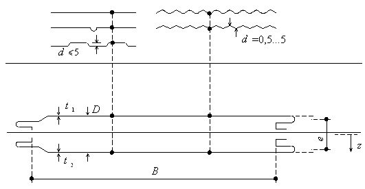
Рисунок 2 - Параметры профилированных обшивок
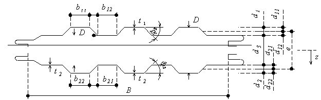
Таблица 2 Параметры панели
| Слой | Размеры | Свойство материала | Структурное свойство |
|---|---|---|---|
| Обшивка 1 | 1 , d 1, d 11 , d 12 , b 11 , b 12 , A F 1 , l F 1 | E F 1 , a F1 | B F 1 |
| Сердцевина | d s | E S , G S | S |
| Обшивка 2 | t 2 , d 2, d 21 , d 22 , A F 2 , l F 2 | E F 2 , a F2 | B F 2 |
Геометрические характеристики панелей t 1 , d 1 , d 11 , d 12 , b 11 , b 12 , AF 1 , lF 1 , d c , t 2 , d 2 , d 21 , d 22 , b 22 , b 21 , AF 2 , lF 2 , φ 1 , φ 2 .
Таблица 3 Физико-механические характеристики материалов панелей с сердцевиной из минераловатного утеплителя
| Наименование показателя | Требуемое значение для минераловатных плит | Требуемое значение для минераловатных плит |
|---|---|---|
| стеновых | кровельных | |
| Плотность, кг/м³ , не менее | 105 | 130 |
| Предел прочности на сжатие материала сердцевины R yсс , МПа, не менее | 0,06 | 0,07 |
| Предел прочности на растяжение (отрыв слоев) материала сердцевины R ypс , МПа, , не менее | 0,09 | 0,10 |
| Предел прочности на сдвиг (срез) материала сердцевины R cc , МПа,не менее | 0,055 | 0,060 |
| Предел текучести стальных обшивок R y , МПа | 230 | 230 |
| Модуль упругости материала обшивки E f , МПа | 2,1∙10 5 | 2,1∙10 5 |
| Модуль упругости материала сердцевины при растяжении E p , МПа, не менее | 4,0 | 4,0 |
| Модуль упругости материала сердцевины при сжатии E c , МПа, не менее | 3,5 | 3,5 |
| Модуль сдвига материала сердцевины G S , МПа | 2,0 | 2,0 |
| Коэффициент ползучести* (только для панелей крыши и потолка) φ 2000 | 1,5 | 1,5 |
| φ 100000 | 4,0 | 4,0 |
| Прочность клеевого соединения на образцах «сталь - сталь» МПа, не менее | 0,1 | 0,1 |
| * Определение коэффициента ползучести приведено в разделе 12. |
Таблица 4 Физико-механические характеристики материалов панелей с сердцевиной из пенополистирола
| Наименование показателя | Требуемые значения для пенополистирола марок | Требуемые значения для пенополистирола марок |
|---|---|---|
| ПСБ-С-15 | ПСБ-С-25 | |
| Плотность, кг/м³ , не менее | 35,0 | 37,0 |
| Предел прочности на сжатие материала сердцевины R yсс , МПа, не менее | 0,04 | 0,08 |
| Предел прочности на растяжение (отрыв слоев) материала сердцевины R ypс , МПа, не менее | 0,18 | 0,25 |
| Предел прочности на сдвиг (срез) материала сердцевины R cc , МПа, не менее | 1,2 | 1,5 |
| Предел текучести стальных обшивок R y , МПа | 230 | 230 |
| Модуль упругости материала обшивки E f , МПа | 2,1∙10 5 | 2,1∙10 5 |
| Модуль упругости материала сердцевины при растяжении E p , МПа, не менее | 2,3 | 2,4 |
| Модуль упругости материала сердцевины при сжатии E c , МПа, не менее | 3,0 | 3,5 |
| Модуль сдвига материала сердцевины G S , МПа | 1,5 | 2,2 |
| Коэффициент ползучести* (только для панелей крыши и потолка) φ 2000 | 2,4 | 2,4 |
| φ 100000 | 7,0 | 7,0 |
| Прочность клеевого соединения на образцах «сталь - сталь», МПа | 0,1 | 0,1 |
|---|---|---|
| * Определение коэффициента ползучести приведено в разделе 12. |
Таблица 5 Физико-механические характеристики сердцевины панели из пенополиуретана (ППУ) и пенополиизоцианурата (ППИ)
| Наименование показателя | Требуемые значения для минераловатных плит | Требуемые значения для минераловатных плит |
|---|---|---|
| Наименование показателя | ППУ | ППИ |
| Плотность, кг/м³ , не менее | 35 | 37 |
| Предел прочности на сжатие материала сердцевины R yсс , МПа, не менее | 0,1 | 0,1 |
| Предел прочности на растяжение (отрыв слоев) материала сердцевины R ypс , МПа, не менее | 0,06 | 0,08 |
| Предел прочности на сдвиг (срез) материала сердцевины R cc , МПа, не менее | 0,10 | 0,12 |
| Предел текучести стальных обшивок R y , МПа | 230 | 230 |
| Модуль упругости материала обшивки E f , МПа | 2,1∙10 5 | 2,1∙10 5 |
| Модуль упругости материала сердцевины при растяжении E p , МПа, не менее | 1,7 | 1,8 |
| Модуль упругости материала сердцевины при сжатии E c , МПа, не менее | 1,6 | 1,7 |
| Модуль сдвига материала сердцевины G S , МПа | 1,5 | 1,8 |
| Коэффициент ползучести* (только для панелей крыши и потолка) φ 2000 φ 100000 | 2,4 7,0 | 2,4 7,0 |
| Прочность клеевого соединения на образцах «сталь - сталь», МПа | 0,08 | 0,08 |
| * Определение коэффициента ползучести приведено в разделе 12. |
5Расчет панелей по предельным состояниям первой и второй групп 5.1 Общие положения
Предельные состояния первой и второй групп определяют несущую способность панелей, противодействующую разрушению конструкции под внешними силовыми воздействиями, а также невозможность их дальнейшей эксплуатации при достижении предельных прогибов.
5.2Сочетания расчетных нагрузок
Сочетания нагрузок приняты в соответствии с СП 20.13330. Однако при назначении коэффициентов сочетания и частных коэффициентов материала следует учитывать специфичные для трехслойных панелей погодные факторы и их влияние на нагрузки и напряженное состояние, а также значительную изменчивость механических характеристик материала сердцевины вследствие ползучести слоя утеплителя.
5.3Предельное состояние по потере несущей способности
Предельное состояние первой группы определяет несущую способность панелей, вследствие возникновения повреждений конструкций под внешними воздействиями, при которых дальнейшая эксплуатация панели невозможна. В панелях могут возникать следующие предельные состояния:
- текучесть в обшивках панелей с последующим их разрушением;
- выпучивание обшивок панели с последующим разрушением панели;
- разрушение профилированной обшивки вследствие местной потери устойчивости стенок и полок профиля;
- разрушение сердечника в результате сдвига утеплителя;
- разрушение профилированной обшивки вследствие сдвига;
- разрушение сердечника или профилированной обшивки на контакте с сосредоточенной линейной нагрузкой;
- разрушение панелей в месте контакта с опорной конструкцией.
5.4Предельное состояние по деформации панелей
Проверку предельного состояния по деформациям панелей проводят путем расчета на воздействие нормативных нагрузок. Прогибы панелей не должны превышать значений расчетных прогибов по СП 20.13330.
6Методы расчета
При расчете панелей следует пользоваться одним из двух методов:
- расчет в стадии упругих деформаций;
- расчет с учетом пластического шарнира.
При расчете панелей по предельным состояниям первой и второй групп необходимо учитывать податливость сердечника при сдвиге. Для этого следует применять постоянный модуль сдвига материала сердцевины, соответствующий среднему значению при нормальной температуре внутри помещения. Главные векторы напряжений должны быть определены по 6.2.
Расчет с учетом развития пластических деформаций следует проводить только тогда, когда проверяются изгибные напряжения над промежуточной опорой. Данный расчет не следует применять, когда первое предельное состояние - разрушение заполнителя при сдвиге.
6.1Расчет в упругой стадии
Внутренние силы в сечениях панели (изгибающие моменты, нормальная и сдвигающая силы) - результат комбинации всех воздействий, приложенных к трехслойным панелям, следует находить применением теории упругости с учетом податливости материала заполнителя при сдвиге.
Формулы расчета панелей должны соответствовать приведенным в таблице А.1 для панелей с гладкими и слабопрофилированными поверхностями и в таблице А.2 для панелей с профилированными поверхностями (приложение А).
6.2Расчет с учетом развития пластических деформаций
6.3Общие предпосылки расчета
- материалы заполнителя и поверхностей для диапазона рассматриваемых деформаций остаются линейно упругими;
- продольные деформации сердцевины настолько малы в сравнении с деформациями обшивок, что влиянием продольных нормальных напряжений в заполнителе можно пренебречь, за исключением случая, когда расчет проводят в пластической стадии и пластические шарниры допускаются в расчетной схеме панели;
- внутренний слой панели (сердцевина) настолько податлива, что при определении равнодействующих напряжений нельзя пренебрегать влиянием деформаций сдвига;
- при длительном воздействии поперечных нагрузок (постоянная и временная нагрузки, снег и т. п.) в покрытиях и перекрытиях зданий, в потолочных панелях ползучесть внутренних слоев панелей от напряжений сдвига вызывает образование дополнительных прогибов и изменение внутреннего напряженного состояния. Это следует принимать во внимание при расчетах по предельным состояниям первой и второй групп;
- в трехслойных панелях температура представляет собой, в ряде случаев, доминирующий случай нагрузки, что создает изгибающие моменты в сечениях панелей. При расчете панелей стен и кровли следует обязательно учитывать температурные воздействия вследствие разности температур на наружной и внутренней обшивках. Температуры на внешней и внутренней обшивках определяют в соответствии с СП 20.13330.
Примечания
1 Нормальные силы NF 1 и NF 2 вызывают равномерное распределение сжимающих и растягивающих напряжений во внешних и внутренних слоях панели, в то время как изгибающие моменты МF 1 и МF 2 вызывают нормальные напряжения, которые изменяются линейно по глубине слоя сердцевины. Местная потеря устойчивости сжатой обшивки панели делает распределение нормальных напряжений на поверхности нелинейным.
- 2 Поперечная сила QS вызывает равномерное распределение сдвигающих напряжений τ c по высоте сердцевины панели. В этом случае жесткость слоя сердцевины при сжатии и растяжении в направлении вдоль трехслойной панели не принимается во внимание. Поперечные силы QF 1 и QF 2 вызывают сдвигающие напряжения τ F 1 и τ F 2 на слоях обшивки с конечной изгибной жесткостью.
- от изгибающих моментов:
- момента МF на металлических обшивках панели и момента МS (многослойная часть), который возникает от нормальных сил NF 1 и NF 2 на поверхностях, умноженных на расстояние между центрами тяжести е ;
- от поперечных сил:
- сдвигающей силы QF на металлических обшивках панели и компонента сдвигающей силы QS в многослойной части профиля.
Следует допустить, что сдвигающие напряжения τ F 1 и τ F 2 постоянны по высоте стенок профилей металлической обшивки (рисунок 6).
Рисунок 3 - Схема внутренних усилий в сечении в панели со слабопрофилированными обшивками
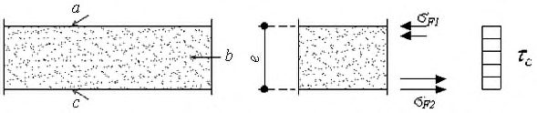
Рисунок 4 - Схема внутренних напряжений в сечении панели со слабопрофилированными обшивками
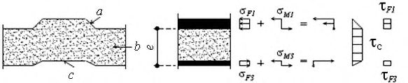
где МS и QS - изгибающий момент и поперечная сила в сердцевине панели;
МF 1 и QF 1 - изгибающий момент и поперечная сила в верхней обшивке панели;
МF 2 и QF 2 - изгибающий момент и поперечная сила в нижней обшивке панели.
См. также рисунки 5 и 6 и формулы (7)-(9).
Рисунок 5 - Схема внутренних усилий в сечении панели с профилированными обшивками
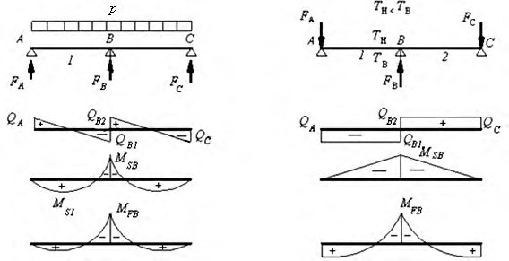
Рисунок 6 - Схема внутренних напряжений в сечении панели с профилированными обшивками
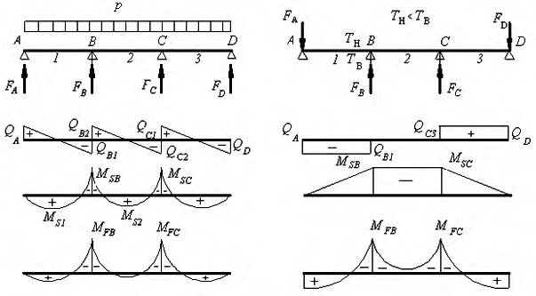
где АF 1 , АF 2 - площади поперечного сечения профилированных обшивок;
IF 1 , IF 2 - моменты инерции профилированных обшивок.
Касательные напряжения в сердцевине и на обшивках должны быть вычислены по формулам (7) и (8) соответственно:
где sw 1 и sw 2 - высота стенок профилированных обшивок; t 1 и t 2 - толщина стенок профилированных обшивок; n 1 и n 2 - число стенок в гофрах профилированных обшивок панели на единицу ширины панели.
7Расчетные схемы панелей
7.1Основные положения
Расчетную толщину стального поверхностного листа следует принимать как t d = t ном -t цинк - 0,5 t допуск , где t ном - номинальная толщина стального листа, t цинк -общая толщина цинковых слоев (или аналогичного защитного покрытия) и t допуск - нормальный или высокий допуск согласно ГОСТ 19904. Расчетную толщину обшивок из других металлов: алюминия, нержавеющей стали или меди, должны определять таким образом, чтобы они представляли статистически надежные минимальные значения толщины. Для этих материалов расчетную толщину t следует принимать как td = t ном -t цинк - 0,5 t допуск во всех уравнениях, приведенных в настоящем своде правил.
7.2Панели с плоскими или слабопрофилированными поверхностями
7.2.1 Однопролетные панели
- 7.2.1.1 Трехслойные панели при эксплуатации в составе ограждающих конструкций зданий и сооружений испытывают преимущественно воздействие внешних сил в виде равномерно распределенной нагрузки и воздействие разности температур на обшивках. Однопролетные панели с плоскими или слабопрофилированными обшивками на практике преимущественно испытывают воздействие внешних сил в виде равномерно распределенной нагрузки. Воздействия разности температур на обшивках не вызывают развития в поперечных сечениях однопролетных панелей внутренних изгибающих моментов продольных и поперечных сил и создают лишь дополнительный прогиб в середине пролета. Внутренние силы в сечениях панели определяют далее на единицу ширины панели.
- 7.2.1.2 Параметры, характеризующие жесткости элементов панели:
- жесткость обшивок:
- жесткость панели:
𝐺𝑆 модуль сдвига материала сердцевины панели;
𝐵𝑠 жесткость при изгибе на единицу ширины панели;
𝐴𝑠 площадь сердцевины на единицу ширины панели 𝐴 𝑠 = 𝑒 ;
𝐵 ширина панели; 𝑘𝑡 коэффициент сдвиговой податливости слоев панели c тонкими обшивками.
Для панелей с одинаковым материалом обшивок жесткость панели на единицу ширины определяют по формуле
- 7.2.1.3 Изгибающие моменты и поперечные силы в сечениях панели определяются по формулам:
7.2.2 Неразрезные многопролетные панели с тонкими обшивками
- 7.2.2.1 Внутренние силы в сечениях неразрезных трехслойных панелей следует определять посредством выражений для изгибающего момента, опорной реакции и сдвигающей силы на промежуточной опоре и прогибов в пролетах, вызванных равномерно распределенной нагрузкой и перепадом температур на сплошной двух- или трех пролетной панели.
- 7.2.2.2 Внутренние силы, возникающие в сечениях двухпролетной панели от воздействия внешней равномерно распределенной нагрузки, вычисляют по формулам:
где 𝑀 𝐹1 = 𝑀𝐹2 изгибающие моменты в обшивках;
𝑀𝑆 -изгибающий момент в сечении панели в пролете;
𝑀𝑆𝐵 изгибающий момент в сечении панели на промежуточной опоре В ;
𝐹 𝐵 опорная реакция на промежуточной опоре;
QSB - поперечная сила на промежуточной опоре В ; 𝑘𝑡 см. формулу (10).
- 7.2.2.3 Максимальные внутренние силы, возникающие в сечениях двухпролетной панели от воздействия разности температур на обшивках панели, определяются по формулам:
где θ = α(𝑇 2 -𝑇 1 ) 𝑒 ; 𝑘𝑡 см. формулу (10).
- 7.2.2.4 Внутренние силы, возникающие в сечениях трехпролетной панели от воздействия внешней равномерно распределенной нагрузки, вычисляют по формулам:
где 𝑘𝑡 см. формулу (10).
7.2.2.5 Внутренние силы, возникающие в сечениях трехпролетной панели от воздействия разности температур на обшивках панели, вычисляют по формулам:
где θ = α(𝑇 2 -𝑇 1 ) 𝑒 ; 𝑘𝑡 см. формулу (10).
7.3Трехслойные панели с профилированными поверхностями обшивок
7.3.1 Однопролетные панели
- 7.3.1.1 При расчете однопролетных панелей жесткость профилированных листов обшивки существенно влияет на распределение усилий в сечениях панели. В общем случае применяются численные методы расчета, например, с помощью метода конечных элементов.
- 7.3.1.2 При расчете панелей с профилированными обшивками принимают следующие характеристики жесткости обшивок и панелей в целом:
- при профилированных обшивках различной формы с обеих сторон панелей жесткость на единицу ширины панели:
- при одной профилированной и одной гладкой или слабо профилированной обшивках панелей
- коэффициент сдвиговой податливости слоев панели с профилированными обшивками
где G - модуль сдвига слоев панели.
- 7.3.1.3 Изгибающие моменты и поперечные силы от равномерно распределенной нагрузки для однопролетных панелей с жесткими обшивками вычисляют по формулам:
где 𝑘𝑝 см. формулу (24).
7.3.2 Неразрезные многопролетные панели с профилированными обшивками
- 7.3.2.1 Напряжения в сечениях панелей и прогибы сплошных многослойных панелей с толстыми обшивками можно определить аналитически для часто встречающихся простых случаев.
- 7.3.2.2 Эпюры внутренних сил от воздействия внешней равномерно распределенной нагрузки и разности температур на обшивках в двухпролетных панелях приведены на рисунке 7. а - усилия в панели от постоянной нагрузки; б - усилия в панели от разности температур на обшивках; 1 , 2 - пролеты
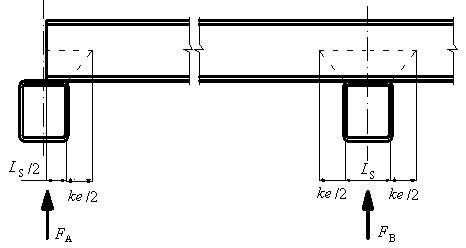
Рисунок 7 - Эпюры M и Q в трехслойных панелях и их обшивках от равномерно распределенной нагрузки
- 7.3.2.3 Изгибающие моменты и поперечные силы в сечениях двухпролетной неразрезной панели, в пролетах и на опорах А (крайняя) и В (промежуточная) от равномерно распределенной нагрузки вычисляют по формулам:
где 𝑘𝑝 см. формулу (24);
𝑀𝑆1 изгибающий момент в пролете панели с профилированной обшивкой;
𝑀𝑆𝐵 изгибающий момент на опоре панели с профилированной обшивкой;
𝑀𝐹𝐵 изгибающий момент в профилированной обшивке панели;
𝑄𝑆𝐴 поперечная сила в панели на опоре А ;
𝑄𝑆𝐵1 поперечная сила в панели на опоре В ;
𝐵𝑆𝑝 жесткость на единицу ширины панели;
𝐵𝐹1𝑝 жесткость профилированной обшивки на единицу ширины панели;
𝐹 𝐴 и 𝐹 𝐵 опорные реакции на опорах А и В.
- 7.3.2.4 Изгибающие моменты и поперечные силы в сечениях двухпролетной неразрезной панели, в пролетах и на опорах А (крайняя) и В (промежуточная) от разности температур на обшивках панели вычисляют по формулам:
где θ = α(𝑇 2 -𝑇 1 ) 𝑒 ; 𝑘𝑝 см. формулу (24).
- 7.3.2.5 Эпюры внутренних сил от воздействия равномерно распределенной нагрузки и разности температур на обшивках в трехпролетных панелях приведены на рисунке 8. Изгибающие моменты и поперечные силы в сечениях трехпролетной неразрезной панели, в пролетах и на опорах А (крайняя) и В (промежуточная) от равномерно распределенной нагрузки определяются по формулам:
где 𝑘𝑝 см. формулу (24). а - усилия в панели от постоянной нагрузки; б - усилия в панели от разности температур на обшивках; 1 , 2 , 3 - пролеты
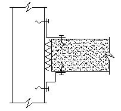
Рисунок 8 - Эпюры M и Q в трехслойных панелях и их обшивках от поперечной равномерно распределенной нагрузки и разности температур на обшивках панели
- 7.3.2.6 Изгибающие моменты и поперечные силы в сечениях трехпролетной неразрезной панели, в пролетах и на опорах А (крайняя) и В (промежуточная) от разности температур вычисляют по формулам:
8Расчет стальных обшивок панелей
где e - расстояние между центрами тяжести обшивок панелей; b -ширина панели;
1 t - толщина сжатого стального листа.
где kd - коэффициент, зависящий от начальных дефектов и значений коэффициента Пуассона, при отсутствии экспериментальных данных, принимается равным 0,6 - для панелей с сердцевиной из качественного полиуретана и 0,5 - для панелей из других видов утеплителя;
𝐸𝑆 = 𝐸𝐹+𝐸𝑆 2 - среднее значение модуля упругости сердцевины при растяжении и сжатии;
𝐺𝑆 - среднее значение модуля сдвига сердцевины;
𝐸𝐹 модуль упругости металлической обшивки.
8.2Учет местной потери устойчивости полок и стенок профилированной обшивки панелей
Стальные профилированные обшивки вычисляют по формуле
Для полок и полностью сжатых стенок профилированного листа k σ = 4,0.
- коэффициент влияния напряженного состояния полок и профилированной обшивки на местную устойчивость k формуле
8.3Расчет стенок профилированных обшивок на поперечную силу
где γ c - коэффициент условий работы; hw -высота стенки между срединными плоскостями полок;
RS -расчетное сопротивление при сдвиге, учитывающее потерю устойчивости стенки, приведенное в таблице 5;
- α -угол наклона стенки относительно полок.
Таблица 5
| Условная гибкость стенки | Расчетные сопротивления по сдвигу |
|---|---|
| l 𝑤 ≤ 0,83 | 0,58 R y |
| 0,83 < l 𝑤 <1,40 | 0,48𝑅 𝑦 l 𝑤 ⁄ |
| l 𝑤 ≥ 1,40 | 0,67𝑅 𝑦 λ ̅ 𝑤 2 ⁄ |
8.3.2 Условную гибкость стенки вычисляют по формуле
где sw -наклонная высота стенки гофрированного профиля.
9Несущая способность трехслойных панелей по сопротивлению утеплителя сердцевины реакции на опорах
где kn - поправочный коэффициент распределения напряжений по площади сердцевины следует определять с помощью испытаний; при отсутствии экспериментальных данных рекомендуется применять следующие значения:
- kn = 0 - для минераловатной сердцевины;
- kn = 0,5·10 2 - для сердцевины из пенопласта при е ≤ 100 мм;
- kn e = 0,5· e 2 - для сердцевины из пенопласта при е > 100 мм.
Рисунок 9 - Призма смятия утеплителя сердцевины над опорой
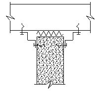
где γ c - коэффициент условий работы;
B - ширина панели;
LS - ширина опоры; e - расстояние между центрами тяжести обшивок;
- Rycc - расчетное значение прочности на сжатие материала сердцевины.
10Расчет элементов крепления панелей
при t = t 1 α = 3,6√ 𝑡 / 𝑑 ≤ 2,1; при t 1 ≥ 2,5 t α = 2,1; при t < t 1 ≤ 2,5 t α определяют по линейной интерполяции.
где Fnn - нормативное сопротивление метиза на растяжение; γ m - коэффициент безопасности по материалу метиза, γ m = 1,25.
где γ m - см. формулу (51).
где t sup -толщина опорного элемента, к которому крепится винт или дюбель; s -шаг резьбы.
где n - число винтов на панели шириной 1 м.
11Расчет профилированных поверхностей на контакте с линейной нагрузкой или линейной опорой
- для крайней опоры
- для промежуточной опоры или линейной нагрузки в пролете
где 𝑛 число стенок на 1 м панели; φугол наклона стенки относительно опорной балки 45 о ≤ φ ≤ 90 о ; 𝑟 радиус изгиба на стыке полки и стенки гофра; 𝑏 длина контакта с опорной частью или местной линейной нагрузкой; h высота плоской части стенки профиля; 𝑡 толщина стенки.
Если соотношение поперечных сил не соответствует формуле (57), необходимо изменить параметры площади контакта панели с каркасом.
где 𝑀𝐹2 несущая способность профилированного листа по моменту;
𝐹𝐹2 несущая способность профилированного листа на сосредоточенную линейную нагрузку.
12Влияние времени на деформации сдвига материала сердцевины панелей
где φ t - коэффициент ползучести; φ t следует определять испытанием либо используя следующие значения:
- для жесткого пенопласта (пенополистирола, пенополиуретана, пенополиизоцианурата) при времени присутствия снеговой нагрузки на кровле:
φ t =7,0 для постоянных нагрузок;
- для минеральной ваты:
φ t =4,0 для постоянных нагрузок.
В тех регионах, где снег выпадает нерегулярно и лежит в течение нескольких дней (не более недели), ползучестью от снеговой нагрузки допускается пренебречь.
13Расчет панелей по предельным состояниям второй группы
13.1Однопролетные панели с тонкими обшивками
;
𝐺𝑠 модуль сдвига материала сердцевины панели;
𝐵𝑠 жесткость при изгибе на единицу ширины панели, 𝐵𝑠 = 𝐸𝐹𝐴𝐹1𝐴𝐹2𝑒 2 𝐴𝐹1+𝐴𝐹2 ;
𝐴𝑠 площадь сердцевины на единицу ширины панели.
Прогиб в середине пролета f T от действия разности температур Δ T = T 2 -T 1 на обшивках вычисляют по формуле где θ = α(𝑇 2 -𝑇 1 ) 𝑒 .
13.2Неразрезные многопролетные панели с тонкими обшивками
где k - см. формулу (60).
где θ = α(𝑇 2 -𝑇 1 ) 𝑒 ; k - см. формулу (60); α коэффициент линейного расширения стали.
Максимальный прогиб в пролете панели с тремя пролетами от разности температур на обшивках панели вычисляют по формуле
где θ = α(𝑇 2 -𝑇 1 )
k - см. формулу (60); α коэффициент линейного расширения стали.
13.3Однопролетные панели с гофрированными обшивками
где 𝐵𝑆𝑝 = 𝐸𝐹𝐴𝐹1𝐴𝐹2𝑒 2 𝐴𝐹1+𝐴𝐹2 +𝐸𝐹𝐼𝐹1 жесткость поперечного сечения панели;
𝐵𝐹1 = 𝐸𝐹1𝐼𝐹1 -жесткость верхней обшивки панели;
GS - модуль сдвига материала сердцевины панели; е - расстояние между центрами тяжести стальных обшивок.
Примечание - Для панелей с верхней жесткой профилированной обшивкой и нижней гладкой или слабо профилированной IF 2 = 0.
13.4Неразрезные многопролетные панели с профилированными обшивками
13.5Деформации панелей при длительном воздействии нагрузок
Коэффициент ползучести φ𝑡 определяют на основании экспериментальных исследований по длительному загружению панелей.
14Требования к конструкциям узлов сопряжения панелей
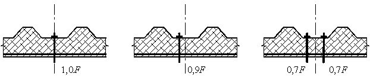
а - потолок - внешняя стена; б - внутренняя стена - потолок (эластичной лентой); в -внутренняя стена - потолок; г - внутренняя стена - внешняя стена (вариант)
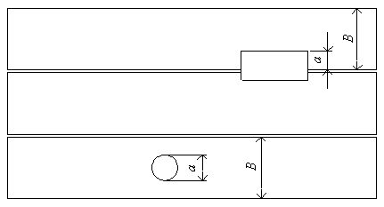
Рисунок 10 - Примеры узлов, с учетом деформации панелей
Рисунок 11 - Крепление панели к каркасу в холодильниках
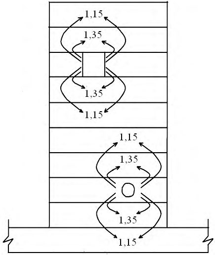
Рисунок 12 - Крепление кровельных панелей самонарезающими винтами
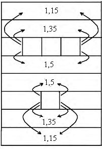
где а - размер отверстия по ширине панели (рисунок 13); b - ширина панели; qp - несущая способность панели, определенная расчетом; qf - фактическая несущая способность панели.
Рисунок 13 - Влияние небольших отверстий на несущую способность панелей
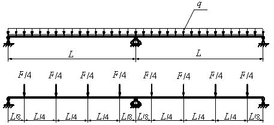
- применять панели с большей несущей способностью;
- проверять возможность перераспределения нагрузки на соседние панели в соответствии с рисунком 14, особенно при размерах отверстий, равных ширине панели;
- устанавливать дополнительные элементы стенового фахверка и кровли (ригели стойки и дополнительные прогоны), разгружающие панели стен и кровли.
Рисунок 14 - Схема переноса нагрузок от панелей с большими отверстиями
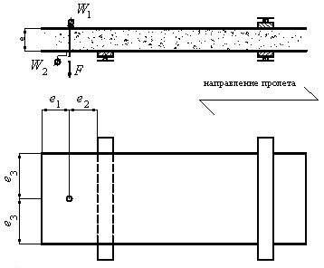
Таблица 7 Предельные уклоны кровли для концевых нахлестов панелей
| Тип теплоизоляции, заложенной в сердечник панели | Предельные уклоны и концевые нахлесты | Предельные уклоны и концевые нахлесты | Предельные уклоны и концевые нахлесты | Предельные уклоны и концевые нахлесты |
|---|---|---|---|---|
| Тип теплоизоляции, заложенной в сердечник панели | Одна панель по всей длине ската кровли | Длина концевого нахлеста, мм | Две и более панели, стыкуемые по скату кровли | Длина концевого нахлеста, мм |
| Пенопласты PU, PIR, IPN | ≥ 4° (7 %) | 200 | ≥ 6° (10 %) | 150 |
| Минеральная вата | ≥ 5° (8,5 %) | 200 | ≥ 8° (14 %) | 150 |
15Испытания полноразмерных образцов панелей
15.1Общие положения по проведению испытаний
- от плюс 2 % до минус 4 % - по толщине сердечника;
- ± 10 % - по плотности внутреннего слоя;
- ± 10 % - по толщине материала обшивки;
- от минус 5 % до плюс 25 % - по пределу текучести металла обшивки.
15.2Испытания натуральных образцов панелей на длительное приложение нагрузок
где f 1 - прогиб, измеренный на конец испытаний; f p - начальный прогиб, измеренный при t = 0; f b - прогиб, вызываемый упругим удлинением обшивок.
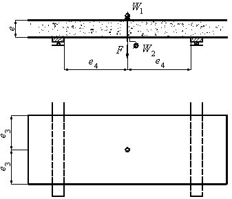
Рисунок 18 - Пример прямолинейной регрессии
где kw = 1,2 к оэффициент, учитывающий не восстанавливаемую часть деформаций материала сердцевины при снятии нагрузки.
15.3Напряженное состояние в зоне промежуточной опоры
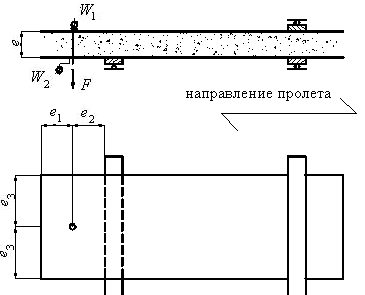
Рисунок 19 - Схема приложения нагрузки при испытаниях
где σ k 2 - напряжение местного изгиба более толстой обшивки толщиной t 2 ; σ k 1 - напряжение местного изгиба самой тонкой обшивки толщиной t 1 ; kу - коэффициент уменьшения, определяемый по формуле
где A 1 , I 1 - площадь поперечного сечения и момент инерции обшивки толщиной t 1 ;
- A 2 , I 2 - площадь поперечного сечения и момент инерции обшивки толщиной t 2 .
где kкi - результат i -го номера испытания; kmi -результат испытания, модифицированный для достижения соответствия расчетным значениям толщины и напряжения пластического течения;
Ryn - предел текучести металла;
Ry 0 - предел текучести металла, измеренный в опытном образце; t - расчетная толщина металла; t о - толщина металла, измеренная в опытном образце. α = 0, если Ry 0 < Ryn ; α = 1, если Ry 0 > Ryn .
Обычно β = 1,0, если t о ≤ t
где t b = отношение ширины к толщине самой широкой полки профилированной обшивки.
где Е 80 - модуль упругости поперек панели при растяжении при температуре 80 °C;
Е 20 - модуль упругости поперек панели при растяжении при температуре 20 °C.
Во всех других случаях k 1 = 1,0.
где Ryрс - прочность на растяжение поперек панели, МПа.
Коэффицент k 2 следует использовать только в случае испытаний при равномерно распределенной нагрузке, т. е. при применении вакуумной камеры, воздушного мешка или аналогичного устройства.
15.4Испытания панелей на температурные воздействия
15.5Испытания на воздействие сосредоточенных сил и повторных нагрузок
15.5.1 Панели, подвергаемые действию сосредоточенных нагрузок
15.5.1.1 Испытания позволяют проверить безопасность и эксплуатационную надежность панелей крыш и потолков при воздействии сосредоточенной нагрузки, например: от веса одного человека, нерегулярно передвигающегося по крыше, во время монтажа и при эксплуатации.
15.5.1.2 Опытным образцом должна быть штучная панель полной ширины. Пролет панели должен быть максимальным из применяемых в практике строительства. К наружной поверхности панели следует прикладывать нагрузку 1,5 кН в середине пролета на заднем ребре или на кромке плоской панели через деревянный блок размерами 100 × 100 мм. Между деревянным блоком и металлической обшивкой панели следует поместить слой резины или войлока толщиной 10 мм.
15.5.1.3 При испытании панели на сосредоточенную нагрузку, возможны три результата:
- если панель выдерживает приложенную нагрузку без видимого внешнего повреждения, то ограничения для случайного доступа на крышу или потолок как во время, так и после монтажа отсутствуют;
- если панель выдерживает нагрузку, но возникают неустраняемые видимые повреждения, следует рекомендовать дополнительные конструктивные мероприятия, чтобы избежать повреждений во время монтажа (например, использовать пешеходные настилы). Доступ на крыши или потолки после завершения строительных работ должен быть запрещен;
- если панель разрушается при приложении нагрузки, то ее следует использовать только на крышах или потолках, куда невозможен (не разрешен) доступ. Это ограничение следует указать на панели (или в сопроводительной документации).
15.6Испытания элементов крепления панелей
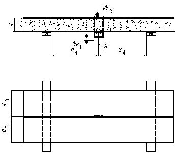
а - крепление на крайней опоре; б - крепление на средней опоре; е 1 - минимальное расстояние от кромки панели; е 2 ≥ 100 мм; е 3 ≥ В /4; В - ширина панели; е 4 ≥ 100 мм
Рисунок 20 - Схема испытания крепления панели винтами, проходящими сквозь панель а
а - крепление на крайней опоре; б - крепление на средней опоре; е 1 - минимальное расстояние от кромки панели; е 2 ≥ 100 мм; е 3 ≥ В /4; В - ширина панели; е 4 ≥ 100 мм
Рисунок 21 - Схема испытания специального крепления панели в стыках
а - крепление винтом; б - специальное крепление панели
Рисунок 22 - Схема испытания панели на сдвиг
16Антикоррозионная защита металлических обшивок панелей
17Огнестойкость и пожароопасность панелей
18Требования к транспортированию, разгрузке и складированию панелей
АПриложение А. Формулы для расчета одно-, двух- и трехпролетных панелей
Таблица А.1 Формулы для расчета одно-, двух- и трехпролетных панелей с гладкими или слабопрофилированными поверхностями (на единицу ширины панели) на действие равномерно распределенной нагрузки p и разности температур Δ t
| Расчетная схема | Обозначение | Поперечная сила у крайней опоры | Поперечная сила у промежуточной опоры | Изгибающий момент в крайнем пролете | Изгибающий момент у промежуточной опоры | Максимальный прогиб конструкции |
|---|---|---|---|---|---|---|
| Однопролетная панель пролетом L | p | p L 2 | - | p L 2 8 | - | 5𝑝𝐿 4 384𝐵 𝑠 (1 +3,2𝑘) |
| Однопролетная панель пролетом L | Δ t | - | - | - | - | θ L 2 8 |
| Двухпролетная панель с равными | p | 𝑝𝐿 2 (1- 1 4(1+𝑘) ) | 𝑝𝐿 2 (1+ 1 4(1+𝑘) ) | 𝑝𝐿 2 8 (1- 1 4(1+𝑘) ) | - 𝑝𝐿 2 8 1 1+𝑘 | 𝑝𝐿 4 48𝐵 𝑠 0,26 +2,6𝑘 +2𝑘 2 1+𝑘 |
| пролетами L | Δ t | - 3𝐵 𝑠 θ 2𝐿 ( 1 1+𝑘 ) | 3𝐵 𝑠 θ ( 1 ) | - 3𝐵 𝑠 θ ( 1 ) | - 3𝐵 𝑠 θ ( 1 ) | 𝑝𝐿 4 48𝐵 0,26 +2,6𝑘 +2𝑘 2 |
| Δ t | 2𝐿 1+𝑘 | 4 1+𝑘 | 2 1+𝑘 | 𝑠 1+𝑘 | ||
| Трехпролетная панель с равными | p | 𝑝𝐿 (1- 1 5+2𝑘 ) | 𝑝𝐿 2 (1+ 1 5+2𝑘 ) | 𝑝𝐿 2 (1- 1 5+2𝑘 ) | 𝑝𝐿 2 | 𝑝𝐿 4 24𝐵 0,83 +5,6𝑘 +2𝑘 2 |
| пролетами L | p | 2 | 8 | - 10+4𝑘 | 𝑠 5+2𝑘 | |
| Δ t | - | - | 1 | -6𝐵 𝑠 θ 1 | θ𝐿 2 1,06+𝑘 | |
| Δ t | - | - | -3𝐵 𝑠 θ 5+2𝑘 | 5+2𝑘 | 4 5+2𝑘 |
где EF 1 , AF 1 и EF 2 , AF 2 - модуль упругости и площадь поперечного сечения верхней (наружной) и нижней (внутренней) обшивок панели соответственно; GC и AC - модуль сдвига и площадь поперечного сечения наполнителя; α - коэффициент температурного расширения металла; е - расстояние между центрами тяжести обшивок.
Таблица А.2 Формулы для расчета одно-, двух- и трехпролетных панелей с гладкими и профилированными поверхностями (на единицу ширины панели) на действие равномерно распределенной нагрузки p и разности температур Δ t
| Расчетная схема | Нагрузка | Поперечная сила у крайней опоры | Поперечная сила у промежуточной опоры | Изгибающий момент в крайнем пролете | Изгибающий момент у промежуточной опоры | Максимальный прогиб конструкции |
|---|---|---|---|---|---|---|
| Однопролетная панель пролетом L | p | p L 2 | - | p L 2 8 | - | 5𝑝𝐿 4 384𝐵 𝑆𝑝 (1 +3,2𝑘) |
| Δ t | - | - | - | - | θ𝐿 2 8 | |
| Двухпролетная панель с равными | p | 0,5𝑝𝐿 0,0625+𝑘 𝑝 0,0833+𝑘 𝑝 | -0,5𝑝𝐿 0,1042+𝑘 𝑝 0,0833+𝑘 𝑝 | 𝑝𝐿 2 8 ( 0,0625+𝑘 𝑝 0,0833+𝑘 𝑝 ) 2 | -𝑝𝐿 2 0,0104 0,0833+𝑘 𝑝 | 0,5 𝑞𝐿 4 𝐵 S𝑝 (1,005+𝑘 𝑝 )(0,0085+𝑘 𝑝 ) (0,0833+𝑘 𝑝 ) |
| пролетами L | Δ t | - 0,125 0,0833+𝑘 𝑝 ∙ 𝐵 𝑆𝑝 θ 𝐿 | 0,250 0,0833+𝑘 𝑝 ∙ 𝐵 𝑆𝑝 θ 𝐿 | - 0,04688 0,0833+𝑘 𝑝 𝐵 𝑆𝑝 θ | - 0,125 0,0833+𝑘 𝑝 𝐵 𝑆𝑝 θ | 0,125𝐿 2 θ (0,0208+𝑘 𝑝 ) (0,0833+𝑘 𝑝 ) |
| Трехпролетная панель с | p | 0,5𝑝𝐿 0,0739+𝑘 𝑝 0,0925+𝑘 𝑝 | -0,5𝑝𝐿 0,1111+𝑘 𝑝 0,0925+𝑘 𝑝 | 𝑝𝐿 2 8 ( 0,0739+𝑘 𝑝 0,0925+𝑘 𝑝 ) 2 | -𝑝𝐿 2 0,0093 0,0925+𝑘 𝑝 | 1,125 𝑞𝐿 4 𝐵 𝑆𝑝 (0,098+𝑘 𝑝 )(0,0054+𝑘 𝑝 (0,0925+𝑘 𝑝 ) |
| равными пролетами L | Δ t | - 0,111 0,0925+𝑘 𝑝 ∙ 𝐵 𝑆𝑝 θ 𝐿 | 0,111 0,0925+𝑘 𝑝 ∙ 𝐵 𝑆𝑝 θ 𝐿 | 0,0444 0,0925+𝑘 𝑝 𝐵 𝑆𝑝 | - 0,111 0,0925+𝑘 𝑝 𝐵 𝑆𝑝 θ | 0,125𝐿 2 θ (0,0361+𝑘 𝑝 ) (0,0925+𝑘 𝑝 ) |
где EF 1 , AF 1 и EF 2 , AF 2 - модуль упругости и площадь поперечного сечения верхней (наружной) и нижней (внутренней) обшивок панели соответственно; G - модуль сдвига слоев панели; α - коэффициент температурного расширения металла; е - расстояние между центрами тяжести обшивок.